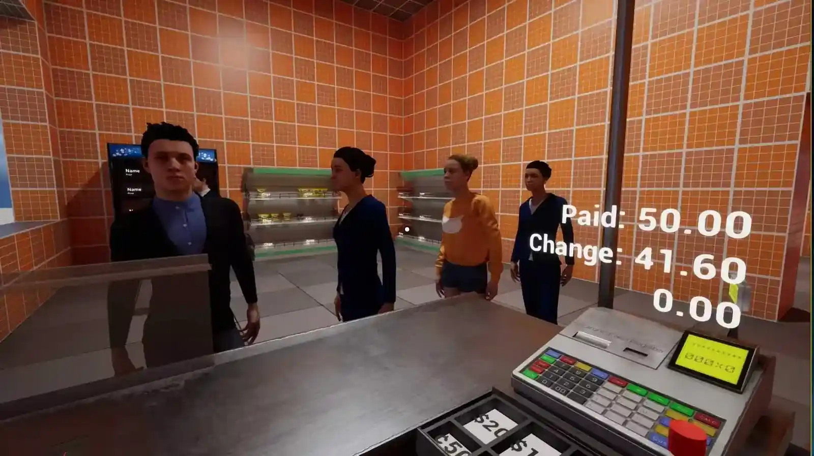

Order stock
Buy goods while wholesale costs are favourable.
A low-poly management sim about stocking shelves, pricing goods, and growing one small shop into a full supermarket.
"Buy low, price it right, keep the shelves full, and lay out a floor plan customers actually enjoy walking through."
Let's Supermarket blends RPG-style progression with sim-building mechanics, letting players lay out their own store, stock and price the goods, hire staff, and reinvest the profits into bigger spaces and pricier inventory. The demo aims for a small but fully playable slice of that experience, with a handful of buildable structures, a couple of controllable characters, a first batch of sellable goods, and a short story hook to tie it together.
The planned staff system assigns each recruited NPC a role, with differences in efficiency and morale. These relationships are part of the design direction while the first playable shop loop is being built.
The planned pricing system links wholesale cost, shelf price and customer tolerance. The first loop uses two starter goods to explore that relationship before the economy expands.
The proposed building system uses relationships between zones, such as complementary food sections or conflicting placements. These are design rules for future expansion, not measured effects on player behaviour.
Hitting a revenue milestone can trigger a conversation with a randomly chosen NPC, who offers a quest that takes real effort to finish but pays off well.
I handle game design and interaction design on a four-person team, working alongside a narrative designer and an artist who covers both character and environment work.
Right now the team is building out the first playable loop, ordering, restocking, pricing, opening, and checkout, using two starter goods to test pricing, shelving, and the basic building tools before the demo's scope grows further.
A low-poly management sim about turning everyday stock, pricing and checkout decisions into the growth of one small store.

The first playable loop is being built around the decisions and labour of running the store, not just decorating it.
Buy goods while wholesale costs are favourable.
Move boxes from the loading dock to the shop floor.
Choose a price customers are willing to pay.
Customers browse the floor and select products.
Scan items, take payment and make change.
Sales return as capital for more goods, staff and eventually a larger store.
The planned system connects fluctuating wholesale costs with shelf prices and customer tolerance. This is a design model for the prototype, not a validated economy.
Design intent: profit depends on reading both supply and customer tolerance.
The proposed building rules let zones reinforce or conflict with one another. Bakery and produce, or a restroom beside a deli, illustrate the intended relationships.
Staff behaviour and small narrative hooks give the management loop a social layer.
The planned staff system gives NPCs an assigned role, with efficiency and morale intended to affect their work.
Revenue milestones are intended to trigger conversations with NPCs and a quest with a meaningful reward.
I handle the game’s interaction and management design on a four-person team, alongside collaborators covering narrative and character / environment art.
The team is using two starter goods to test pricing, shelving and basic building tools before expanding the demo.
The team is developing the five-step loop around two starter goods before expanding the demo.
The larger demo aims to add a handful of buildable structures, a couple of controllable characters, more sellable goods and a short story hook.
The project link remains clickable in the PDF, with a QR code for printed copies.
Explore the projectgithub.com/TaoMingxuan/Lets_SupermarketCurrent: first playable loop in progress. More goods, buildables and story content are planned.